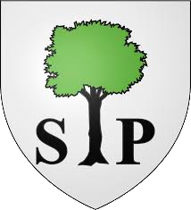
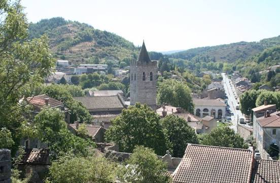

Saint-Pons
de-ThomièresLa cité épiscopale à la porte des Cévennes et du Minervois


⟹ Histoire & Patrimoine Religieux ⟸

À l'origine, Thomières et Saint-Pons sont deux bourgs distincts. Le premier naît autour de la source du Jaur, occupée dès le IVe millénaire avant notre ère et considérée comme un lieu de culte ; le second se développe en 936 autour d'une abbaye bénédictine fondée par le comte de Toulouse Raymond III Pons et son épouse Garsinde, de l'autre côté de la rivière. On les distinguait alors nettement : Thomières, la « ville des pauvres », et Saint-Pons, la « ville mage », riche de son abbaye et de ses maisons de maîtres.

En 1170, la ville et le monastère sont pillés par Roger de Trencavel, dans un conflit féodal lié aux fortifications de La Salvetat. L'abbatiale est reconstruite puis, en 1318, une bulle du pape Jean XXII érige le site en évêché : l'église devient cathédrale, l'abbé Pierre Roger en devient le premier évêque. S'ensuivent deux siècles de développement autour du travail du textile, avant que les guerres de Religion ne ravagent à nouveau la ville en 1567, avec la destruction du cloître et d'une partie de la cathédrale par les huguenots. Il faudra plus de 150 ans et l'action de Monseigneur Percin de Montgaillard pour restaurer les bâtiments, jusqu'à la façade néoclassique actuelle, achevée au début du XVIIIe siècle.
La Révolution française met fin au diocèse : la ville, un temps rebaptisée « Thomières », devient chef-lieu de district puis d'arrondissement en 1800. Ville ouvrière et frondeuse au XIXe siècle, elle perd sa sous-préfecture en 1926 et son industrie textile décline, avant que la création du Parc naturel régional du Haut-Languedoc n'ouvre une nouvelle page, résolument tournée vers le tourisme.
Aujourd'hui, malgré des siècles de guerres et de reconstructions, Saint-Pons-de-Thomières a conservé un patrimoine remarquable : cathédrale, ancien évêché, hôtel de ville et vieilles rues invitent à remonter le temps.
Le trésor de Saint-Pons-de-Thomières se joue aussi en musique : le grand orgue de la cathédrale, construit en 1772 par les facteurs toulousains Jean-Baptiste Micot père et fils, est l'un des rares instruments de l'Ancien Régime parvenus jusqu'à nous quasiment dans leur état d'origine. Restauré dans les années 1980 par Paul Manuel et Barthélemy Formentelli, il permet de jouer avec authenticité tout le répertoire des XVIIe et XVIIIe siècles.
La Cathédrale de Saint-Pons est une véritable forteresse avec des murs de 2,45 mètres, remarquable par ses bas-reliefs sculptés représentant la Cène, l'Ascension et la Crucifixion.
— d'après l'historique de la ville de Saint-Pons-de-ThomièresChaque année, le Festival Orgue & Compagnie transforme la cathédrale en scène musicale, tandis qu'un circuit sensoriel audioguidé et des carnets en relief permettent aux personnes déficientes visuelles de découvrir ce patrimoine par le toucher et le son.
Olargues l'un des Plus Beaux Villages de France, avec son pont du Diable et ses ruelles caladées, à quelques kilomètres.
Minerve cité cathare perchée entre les gorges de la Cesse et du Brian, capitale historique du Minervois.
Roquebrun village au microclimat méditerranéen, connu pour son jardin méditerranéen et ses agrumes.
Grotte de la Devèze à Courniou, à environ 4 km, un espace de découverte du milieu souterrain et de ses concrétions.